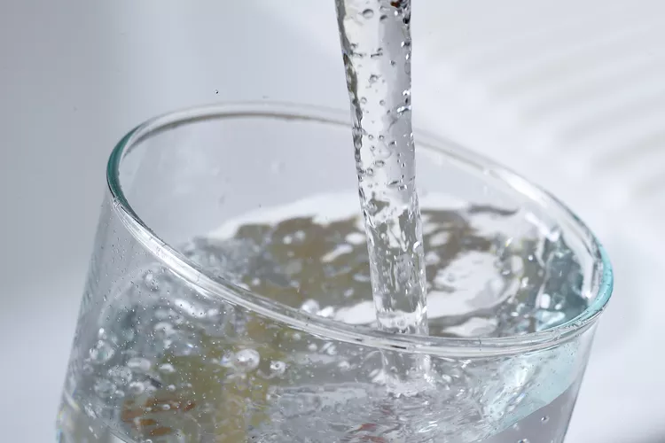

Dehydrated Water

Description
You thought this was going to be a joke didn't you? Just because I'm a funny deity you think I'm making a gag-recipe about taking all of the water out of water to transport it and then adding water back to make it water again?
Well you're wrong. This is a recipe for removing the hydrogen from H2O using the process of electrolysis, leaving you with hydron gas, carbon dioxide gas, and oxygen gas. Useful for long trips through space if you're a pathetic mortal that requires oxygen.
Ingredients
- 9-volt battery
- A battery clip with alligator clamps attached to the end of each wire
- 2 number 2 pencils
- A small glass
- Water (duh)
- a small piece of cardboard
- Baking Soda
Steps
- Remove the eraser and sharpen both ends of each pencil so that the graphite is well-exposed on both ends of each pencil.
- Place the water in the glass.
- Dissolve baking soda in the water.
- Push the pencils through the cardboard to make two holes near the center about 1/2 inch apart from each other.
- Attach one alligator clamp to the top end of each pencil.
- Go google the rest of the electrolysis process I'm immortal but don't have time for this. You're mortal so your life is meaningless, I just found it on wikiHow.